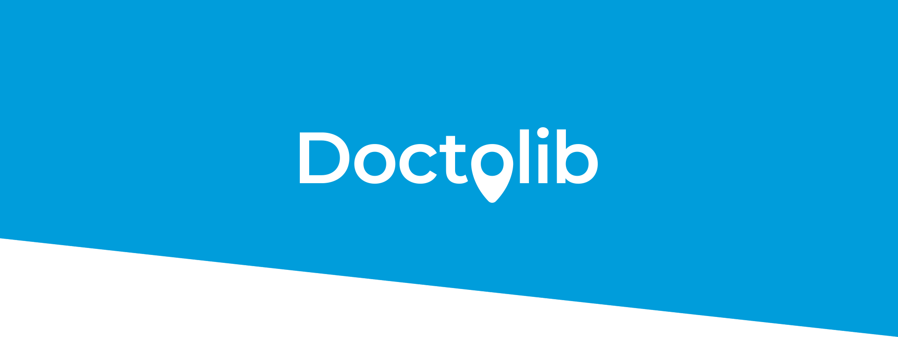
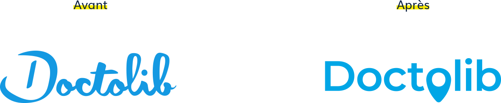
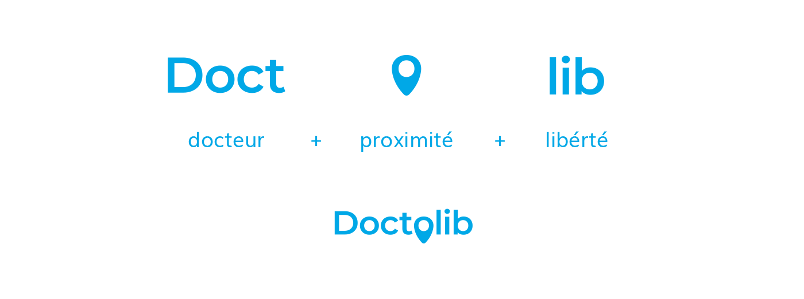
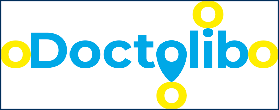
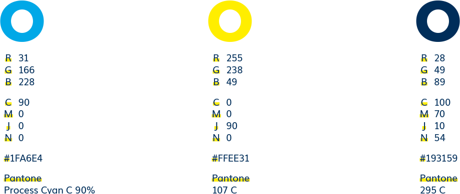
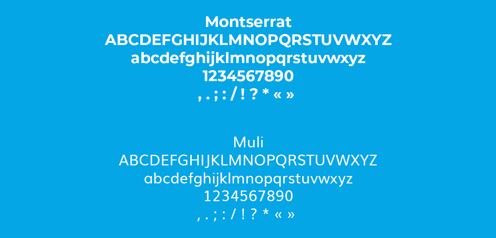
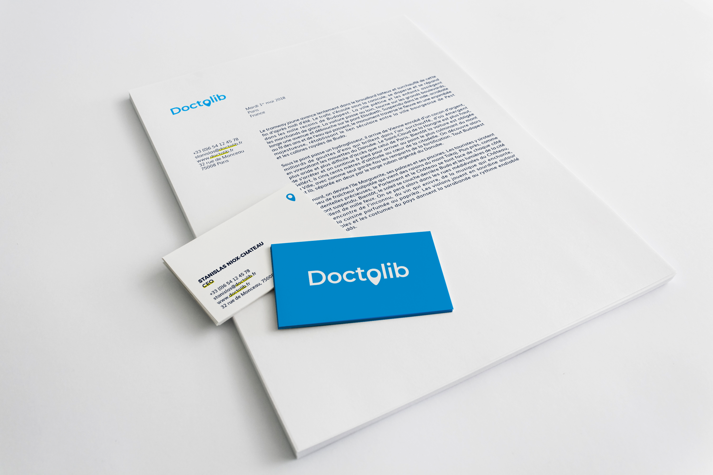

<!DOCTYPE html>
<html lang="en">
  <head>
    <meta charset="UTF-8"/>
    <meta name="viewport" content="width=device-width, initial-scale=1.0"/>
    <meta http-equiv="X-UA-Compatible" content="ie=edge"/>
    <meta property="og:title" content="Doctolib"/>
    <meta property="og:type" content="website"/>
    <meta property="og:url" content="https://0sw.in/doctolib"/>
    <meta property="og:image" content="https://0sw.in/doctolib/img/opengraphimage.jpg"/>
    <meta property="og:image:width" content="1200"/>
    <meta property="og:image:height" content="628"/>
    <meta property="og:description" content="Identité graphique, étude de cas"/>
    <meta property="fb:app_id" content="966242223397117"/>
    <meta name="twitter:card" content="summary_large_image"/>
    <meta name="twitter:title" content="Doctolib"/>
    <meta name="twitter:description" content="Identité graphique, étude de cas"/>
    <meta name="twitter:url" content="https://0sw.in/doctolib"/>
    <meta name="twitter:image" content="https://0sw.in/doctolib/img/opengraphimage.jpg"/>
    <link rel="stylesheet" href="https://0sw.in/css/reset.min.css"/>
    <link rel="stylesheet" href="https://0sw.in/css/bootstrap.min.css"/>
    <link rel="stylesheet" href="https://0sw.in/css/plyr.css"/>
    <link rel="stylesheet" href="https://0sw.in/css/app.css"/>
    <link rel="stylesheet" href="https://0sw.in/css/font-awesome.min.css"/>
    <link rel="apple-touch-icon" sizes="180x180" href="/apple-touch-icon.png"/>
    <link rel="icon" type="image/png" sizes="32x32" href="/favicon-32x32.png"/>
    <link rel="icon" type="image/png" sizes="16x16" href="/favicon-16x16.png"/>
    <link rel="manifest" href="/site.webmanifest"/>
    <link rel="mask-icon" href="/safari-pinned-tab.svg" color="#2a2934"/>
    <meta name="msapplication-TileColor" content="#2a2934"/>
    <meta name="theme-color" content="#ffffff"/>
    <title>Nicolas "0swin" Roger</title>
  </head>
</html>
<body>
  <div class="navbar navbar-dark fixed-top navbar-expand-lg">
    <div class="navbar-header"><a class="navbar-brand js-scroll-trigger" href="https://0sw.in/index.html#">oswin</a></div>
    <button class="navbar-toggler" type="button" data-toggle="collapse" data-target="#navbarText" aria-controls="navbarText" aria-expanded="false" aria-label="Toggle navigation"><span class="navbar-toggler-icon"></span></button>
    <div class="collapse navbar-collapse" id="navbarText">
      <div class="navbar-centered-content">
        <menu class="navbar-nav mr-auto">
          <li class="nav-item js-scroll-trigger"><a class="nav-link js-scroll-trigger" href="https://0sw.in/index.html#">Accueil</a></li>
          <li class="nav-item js-scroll-trigger"><a class="nav-link js-scroll-trigger" href="https://0sw.in/index.html#projets">Projets</a></li>
          <li class="nav-item js-scroll-trigger"><a class="nav-link js-scroll-trigger" href="https://0sw.in/index.html#a-propos">À propos</a></li>
        </menu>
      </div>
      <ul class="navbar-nav">
        <li class="nav-item"><a class="nav-link fa fa-github fa-pad-top" href="https://github.com/0swin" target="_blank"></a><a class="nav-link fa fa-instagram fa-pad-top" href="https://www.instagram.com/heyits0swin/" target="_blank"></a><a class="nav-link fa fa-vimeo fa-pad-top" href="https://vimeo.com/0swin" target="_blank"></a><a class="nav-link fa fa-linkedin fa-pad-top" href="https://www.linkedin.com/in/nicolas9roger/" target="_blank"></a></li>
      </ul>
    </div>
  </div>
  <div id="project-banner" style="background: linear-gradient(rgba(0, 0, 0, 0.5), rgba(0, 0, 0, 0.7)), url('img/thumbnail.jpg')">
    <div class="text">
      <h1 class="display-4">Doctolib</h1>
      <h2>Identité graphique, étude de&nbsp;cas</h2>
    </div>
  </div>
  <div id="project-tags">
    <div class="container">
      <div class="row pt-3">
        <div class="col-md pb-2">
          <ul>
            <li><b>Projet</b></li>
            <li>Client: Doctolib</li>
            <li>Projet scolaire</li>
          </ul>
        </div>
        <div class="col-md pb-2">
          <ul>
            <li class="pb-1"> <b>Outils</b></li>
            <li>Adobe Illustrator</li>
            <li>Adobe InDesign</li>
          </ul>
        </div>
        <div class="col-md">
          <ul>
            <li class="mb-1"><b>Collègue</b></li>
            <li><a href="https://charliedelahousse.dyjix.fr/">Charlie Delahousse</a></li>
          </ul>
        </div>
      </div>
    </div>
  </div>
  <div id="project-content">
    <div class="container">
      <div class="row">
        <div class="col-md-1"></div>
        <div class="col-md-10">
          <p class="text-justify">
            Doctolib, start-up française à succès, propose un service de mise en relation entre médecins et patients. Fondée en 2013, elle possède de nombreux partenaires.
            Au travers de cette refonte graphique que nous proposons, nous voulons mettre en avant l’un des aspects essentiels de Doctolib, trop souvent oublié: la proximité.
            La liberté fournie par le service proposé ainsi que sa facilité d’usage étant déjà souligné dans le nom, il nous paru donc essentiel de mettre la proximité des nombreux praticiens en exergue.
          </p>
          <p class="text-justify">
            Le nouveau logotype proposé possède un but très simple : renforcer l'idée de proximité et de disponibilité des praticiens tout en affirmant la stabilité du système proposé. L'ancien logo, possédait une police d'écriture peu stable, ne permettant pas d'inspirer la confiance dans un milieu aussi important que celui de la santé.
            La Montserrat illustre parfaitement cette idée de fiabilité et stabilité du système proposé. 
          </p>
          <p class="text-justify">Le pin quant à lui, vient dynamiser le logo, tout en rappelant l'un des critères les plus important lors de la réservation d'un rendez-vous chez un médecin, la proximité.</p>
          <p class="text-justify">Construit sur des bases solides et se voulant épuré, notre logo souligne la confiance que se doit d'inspirer Doctolib, à l'aide de procédés simples et impactants. 						</p>
          <p class="text-justify">Notre choix colorimétrique s'est arrêté sur trois couleurs significatives.</p>
          <p class="text-justify">Un cyan, clair, couleur de la sagesse et de la communication, inspirant confiance et calme. Des valeurs des plus importantes dans le domaine dans lequel Doctolib opère.</p>
          <p class="text-justify">Un jaune, couleur de la science et de la sécurité, renforçant par petite touche l'identité visuelle propre à Doctolib. Opèrant en contraste avec le cyan, elle permet une lisibilité accrue.</p>
          <p class="text-justify">Enfin un bleu foncé pour le corps de texte. Il nous paraissait important de s'éloigner du noir, couleur trop souvent analysé comme péjorative et pouvant évoquer la mort. Ce bleu foncé était donc une solution à la fois sobre et élégante ainsi que symbolique. Assez foncé pour être aisé à lire peut importe les handicap visuel dont pourrait souffrir les uttlisateurs.</p>
          <p class="text-justify">Ces couleurs permettent donc à la fois une identité visuelle impactante, lisible et accessible. </p>
        </div>
      </div>
    </div>
  </div>
  <script src="https://0sw.in/js/jquery-3.2.1.slim.min.js"></script>
  <script src="https://cdnjs.cloudflare.com/ajax/libs/popper.js/1.11.0/umd/popper.min.js" integrity="sha384-b/U6ypiBEHpOf/4+1nzFpr53nxSS+GLCkfwBdFNTxtclqqenISfwAzpKaMNFNmj4" crossorigin="anonymous"></script>
  <script src="https://0sw.in/js/bootstrap.min.js"></script>
  <script src="https://0sw.in/js/plyr.min.js"></script>
  <script src="https://0sw.in/js/clipboard.min.js"></script>
  <script>
    var btn = document.getElementById('mail-btn');
    var clipboard = new ClipboardJS(btn);
    clipboard.on('success', function(e) {
    console.log(e);
    });
    clipboard.on('error', function(e) {
    console.log(e);
    });
  </script>
</body>